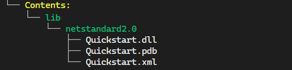
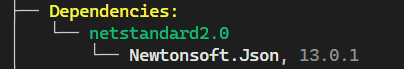
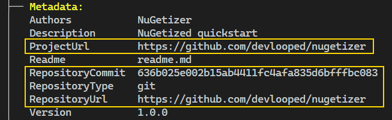
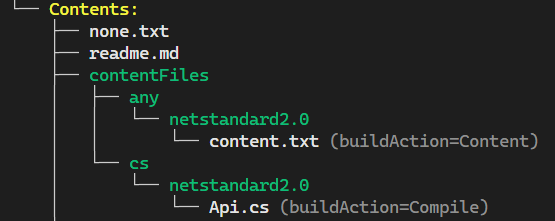

Overview
Tip
Run this example directly in your browser by navigating to the
docs/scenarios/overview folder and running nugetize in a
This example showcases the most basic usage of NuGetizer. It creates a NuGet package from a single project and uses some of the most common packaging metadata properties (which are fully compatible with the SDK pack ones)
Run dotnet restore from this directory, and then run the nugetize
tool to see the package
layout that will be produced.
For the following project file:
<Project Sdk="Microsoft.NET.Sdk">
<PropertyGroup>
<TargetFramework>netstandard2.0</TargetFramework>
<GenerateDocumentationFile>true</GenerateDocumentationFile>
<PackageId>Quickstart</PackageId>
<Authors>NuGetizer</Authors>
<Description>NuGetized quickstart</Description>
<PublishRepositoryUrl>true</PublishRepositoryUrl>
</PropertyGroup>
<ItemGroup>
<PackageReference Include="NuGetizer" />
<PackageReference Include="Microsoft.SourceLink.GitHub" Version="1.1.1"
PrivateAssets="all" />
<PackageReference Include="Newtonsoft.Json" Version="13.0.1" />
</ItemGroup>
<ItemGroup>
<None Include="none.txt" Pack="true" />
<Content Include="content.txt" Pack="true" />
<Compile Update="@(Compile)" Pack="true" />
</ItemGroup>
</Project>
The following package contents will be produced:

Highlights from the project file:
- The standard SDK pack MSBuild properties are used to specify the package metadata:
<PackageId>Quickstart</PackageId>
<Authors>NuGetizer</Authors>
<Description>NuGetized quickstart</Description>
- Generated XML API docs are included in the package alongside the binaries and symbols, under the right target framework path:
<TargetFramework>netstandard2.0</TargetFramework>
<GenerateDocumentationFile>true</GenerateDocumentationFile>

NuGetizer itself is never considered a dependency of the package, even if it does not specify
PrivateAssets="all"on its package reference.The
Newtonsoft.Jsonpackage reference becomes a dependency for the project's current target framework:

- Since NuGet.org surfaces source code repository information and using Source Link is the recommended way to provide it, NuGetizer will automatically detect it in the project and populate the relevant metadata. In this package reference case, you can also see NuGetizer honoring the
PrivateAssets="all"attribute and not including it as a dependency. The PublishRepositoryUrl property controls whether theProjectUrlandRepositoryUrlmetadata are made public:
<PublishRepositoryUrl>true</PublishRepositoryUrl>

- Built-in item groups like
None,ContentandCompilecan be used or updated withPack=truefor inclusion in the package:
<ItemGroup>
<None Include="none.txt" Pack="true" />
<Content Include="content.txt" Pack="true" />
<Compile Update="@(Compile)" Pack="true" />
</ItemGroup>

Note how the None items are included in the package root by default while the Content items are included in the contentFiles folder and automatically follow the contentFiles guidance.
Note
In another example we'll see how to further annotate these items to modify their buildAction, copyToOutput and flatten behaviors.
- If a
readme.md(or.txt) file is present in the project directory, it is automatically included in the package as the readme file to be rendered by nuget.org. See an example of a comprehensive readme.
PackageFile All The Things
At its core, NuGetizer just packs any <PackageFile> in your project. These items can declare the following metadata to affect the resulting location of a file in the package:
| Metadata | Description |
|---|---|
| PackagePath | The relative path of the file within the package. |
| PackFolder | The known folder within the package where the file will be placed. |
| FrameworkSpecific | Whether the PackFolder should be considered as framework-specific. |
When PackagePath is provided, it determines the precise location of the file within the package and the other attributes are ignored.
When PackFolder is provided (i.e. lib or build), the FrameworkSpecific metadata complements it by optionally appending the project target framework automatically.
For example, given the following project file:

Note the relationship between the metadata in each of the PackageFile items and their resulting placement within the package.
It might seem that the lib folder is "special" since it got some items we didn't declare as PackageFile at all, namely, the project's main build output. But that's not the case at all. If we set the following property at the project level:
<EnablePackInference>false</EnablePackInference>
The nugetize output will now be:

This introduces the concept of package contents inference, where certain heuristics turn common packing scenarios into implicit PackageFile items, such as the primary build output shown above.
Package Contents Inference
A set of built-in rules (enabled by default) turn common MSBuild items into PackageFile to make common packing scenarios more intuitive and automatic. These rules can be turned off as mentioned by setting EnablePackInference=false.
The rules attempt to map common items to known NuGet package folders, such as lib, build or contentFiles by transforming them into corresponding PackageFile items, just as if you had added them by hand, annotating them with the corresponding PackFolder and (optional) FrameworkSpecific metadata.
PackFolder and FrameworkSpecific
NuGetizer leverages the concept of PackageFile for all content within a package, not just files. For example, dependencies (via PackageReferences) and framework references (via Reference) are turned into PackageFiles with PackFolder=Dependency and PackFolder=FrameworkReference respectively. Even the package metadata itself is just another PackageFile! (with PackFolder=Metadata)
This allows extending all packing content (inferred or otherwise) via plain MSBuild item manipulation, and provides unparalelled consistency and extensibility.
When an item specifies FrameworkSpecific=true, the project's target framework is added to the final package path, such as lib\netstandard2.0\My.dll. Since the package folder itself typically determines whether it contains framework-specific files or not, the FrameworkSpecific value has sensible defaults so you don't have to specify it unless you want to override it. The default values are:
| PackFolder | FrameworkSpecific |
|---|---|
| content (*) | true |
| lib | true |
| dependency (**) | true |
| frameworkReference (**) | true |
| build/buildTransitive | false |
| all others (***) | false |
* Since the plain content folder is deprecated as of NuGet v3+, we use content to mean contentFiles throughout the docs, targets and implementation. They are interchangeable in NuGetizer and always mean the latter.
** dependency and frameworkReference are pseudo folders containing the package references and framework (<Reference ...) references.
*** tool(s), native, runtime(s), ref, analyzer(s), source/src, any custom folder name.
In order to make the inference more useful and easy to tweak, there are Pack* properties to turn off inference for entire types of items (i.e. PackContent=[true|false]) as well as per-item Pack=[true|false] to turn on/off individually for certain items.
Project Build Output
The PackFolder property (at the project level) determines the PackFolder metadata value for the build outputs of the project (and its XML API docs, pdb and other related files like satellite assemblies). It defaults to lib and as shown in the previous section, has a default of FrameworkSpecific=true since that's the most common case.
This means that by default, a project's output will end up under lib\[target framework] in the package.
But if your project contains MSBuild custom tasks and targets, for example, you can set PackFolder=build on the project and the output will automatically end up under build instead (with no target framework subfolder by default). This is because build tasks are usually built targeting netstandard2.0 but can be consumed/run from projects targetting other frameworks.

Note how NuGetizer is smart about the Microsoft.Build.Tasks.Core package reference in a build targeting project: these dependencies should never become dependencies of your package, since they are only used for building the tasks assembly itself, not for consuming them.
Also note how a PackNone=true property turns on automatic packing of None items, in this case a Quickstart.targets file alongside the project file, which is the typical way MSBuild tasks are consumed.
Package Readme
If you create a readme.md file alongside the project, it will (by default) be automatically included in the package and set as the Readme metadata. Likewise, if you provide the $(PackageReadmeFile) property pointing to a different filename (say, readme.txt), it will also be automatically added to the package.
Package readme inference can be turned off with the PackReadme=false project property.